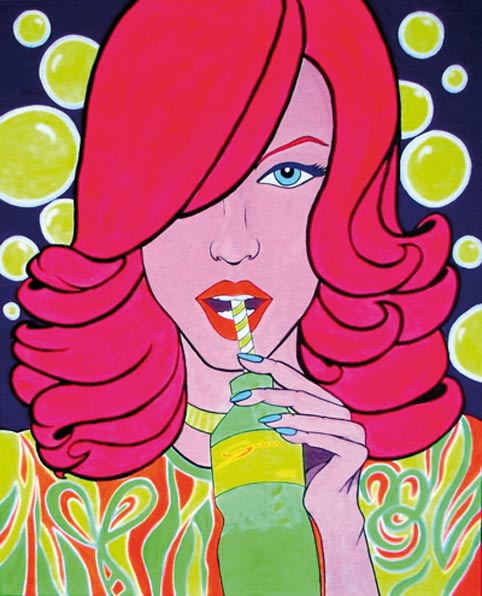

Arte
Menorca tiene una luz especial, propia, que seduce y enamora a todos cuantos la visitan. No ha de extrañar, entonces, que sea tierra de artistas, tanto locales como extranjeros, que han sucumbido a su embrujo.
La isla entera es una auténtica “fábrica” de arte, de buen arte. Aquí podrá encontrar obras en todos los estilos, formatos, precios...
Menorca Art Gallery es la primera galería de arte 100 x 100 on line de las Islas Baleares, dedicada a promover y exportar el arte de la isla al resto del mundo.
Le ofrece una amplia y cuidada selección de obras en una completa web. Un proyecto solvente y representativo, para dar a conocer y poner en valor esa ingente producción, exportándola al mundo.
Si puede, llévese consigo una obra de arte. O, mejor aún, encárguela. La recibirá en su casa cómodamente, sin riesgo, con total garantía. Será un magnífico recuerdo de su estancia en la isla, elegante y con estilo.
Disfrute de Menorca, disfrute de su arte…